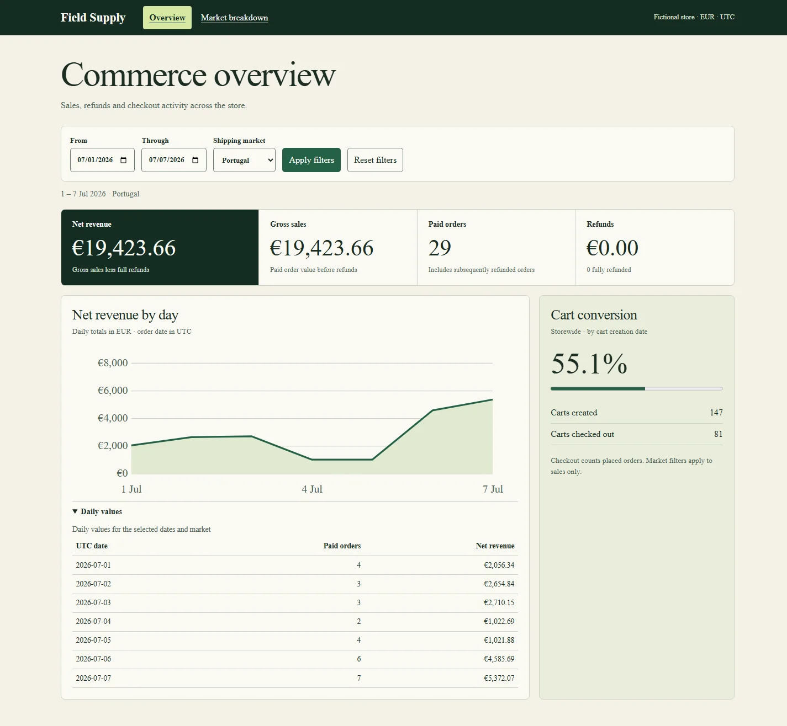
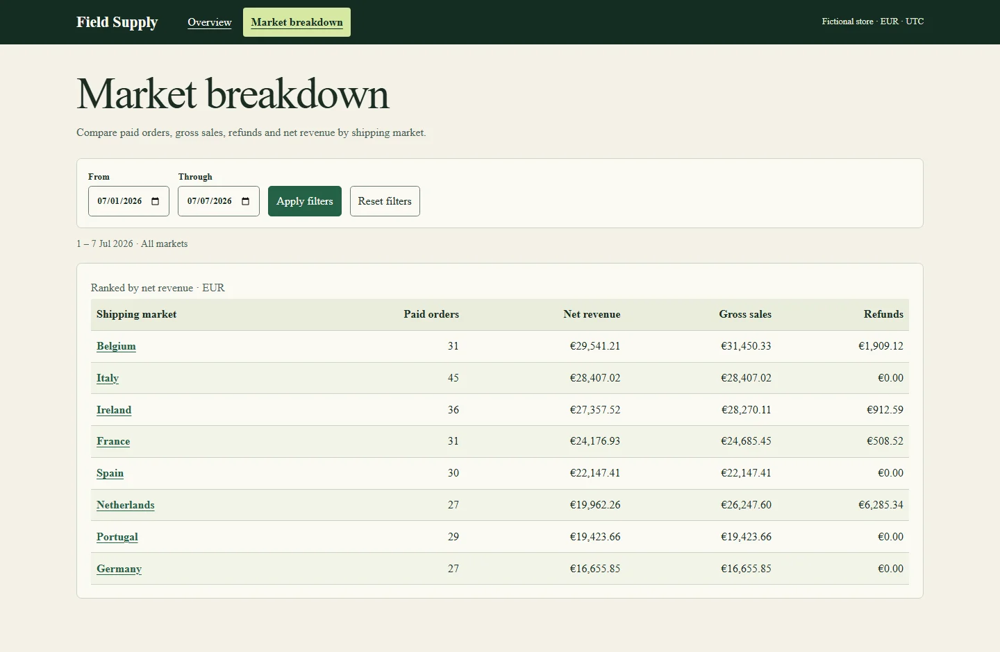
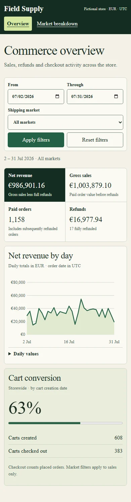

Featured project · Runtime screenshot
Ecommerce Analytics
Reconcile revenue, refunds and conversion, then explore shipping markets and daily trends backed by SQL.
Local demo · Project lead
Public source access pending.
My contribution
I led development of this project.
Run the local demo
From the prepared project checkout, run these commands and open the address printed by the server. The repository may require access.
cd ecommerce-analytics
docker compose up -d --wait
node demo/server.mjs
# Open http://127.0.0.1:4173


Problem
Retail analysts need metric definitions they can reconcile to SQL while exploring dates and shipping markets.
Architecture
PostgreSQL 17 stores the retail model and deterministic seed. A Node server executes a read-only SQL report and caches an aggregate snapshot. Native browser modules filter daily and market totals locally.
Engineering decisions
- Keep storewide cart conversion independent of the shipping-market filter.
- Define net revenue as gross sales minus full refunds and expose daily values for reconciliation.
Implemented workflow
- Apply July 1–7, 2026 and Portugal, then expand the daily chart values.
- Switch to all markets and compare revenue while cart conversion stays fixed.
- Open Market breakdown and select a market while retaining the date range.
Verified result
The latest source handoff records five metric tests, all 14 SQL queries, integrity and inventory concurrency checks, plus Chrome filtering, drill-down, retry and mobile checks.
- Source README, prepared screenshots and the completion handoff were reviewed. Source check results are attributed to that handoff.
Scope and next steps
- The demo reads a snapshot cached until the server restarts.
- The fictional seed uses one EUR reporting currency and full refunds attributed to the original order date.
- Cart conversion is storewide because unconverted carts have no shipping market. Public source access and hosting are pending.
Technology
PostgreSQL · SQL · Node.js · JavaScript
Preview availability
Static runtime preview. No hosted interactive demo is available. The prepared improvements were verified in a local checkout and have not been pushed to GitHub; public source may differ from these captures. Use the repository documentation for the public version's setup requirements.
← Return to portfolio